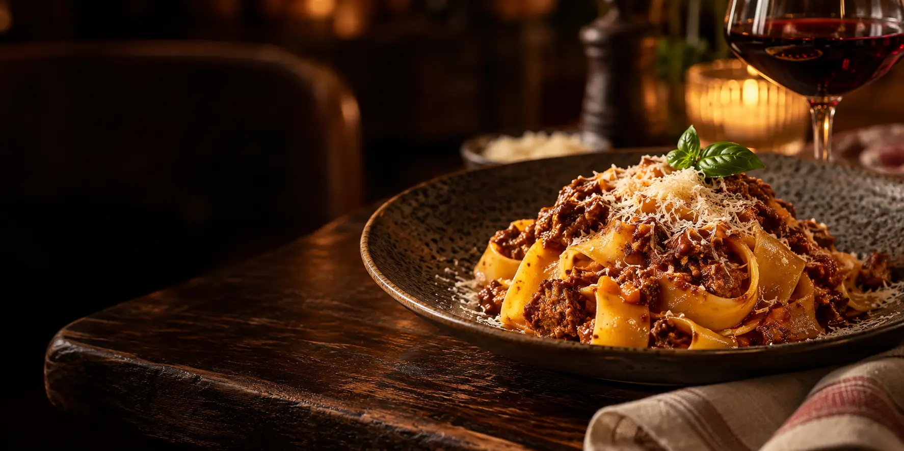
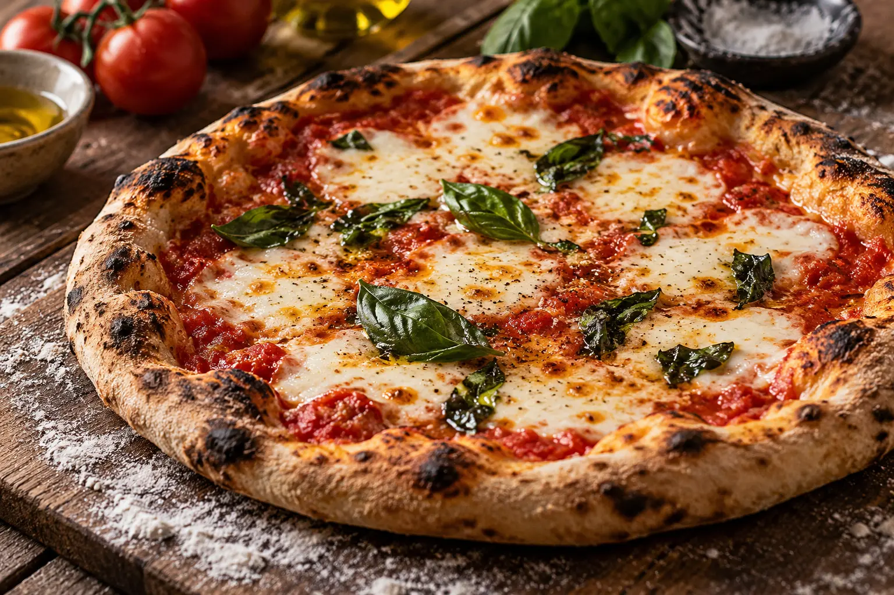

El arte de reunirnos alrededor de la mesa.
Dos tradiciones, una misma pasión por el sabor. Pastas, pizzas y cocina que celebra el encuentro en el corazón de Lince.

Un pedacito de Italia. Un alma muy peruana.
En Trattoria El Bambino, las recetas italianas se encuentran con la creatividad y los sabores del Perú. Una propuesta que reúne pastas preparadas artesanalmente, pizzas para compartir, parrillas y platos de fusión.
Un lugar en Lince para extender la sobremesa, conversar sin prisa y descubrir una combinación de sabores que se siente cercana.
Conoce el restaurante en FacebookDe Italia, la pasión.
Del Perú, el alma.
Sabores que nos conectan. Mesas que nos reúnen.
La buena vida se comparte.
En una mesa siempre cabe una buena conversación. Explora estas fotografías conceptuales de nuestra inspiración gastronómica y visita las redes oficiales para ver imágenes reales del restaurante.
Los mejores planes empiezan con una mesa.
¿Una comida en familia, una cita o una sobremesa con amigos? Cuéntanos cuándo quieres venir y consulta la disponibilidad directamente por WhatsApp.
Tu próxima mesa está en Lince.
Horario de referencia
Lunes a sábado: 12:00 – 22:30
Domingo: 12:00 – 21:00